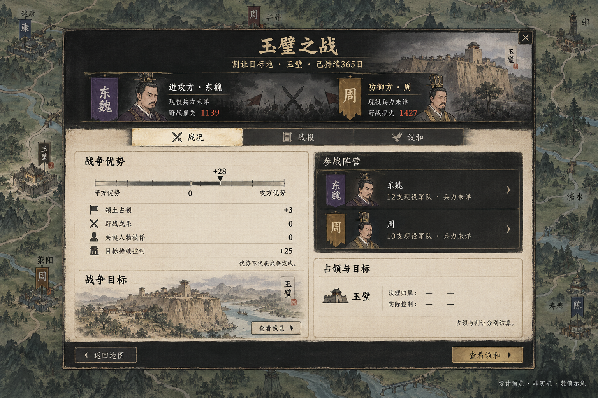
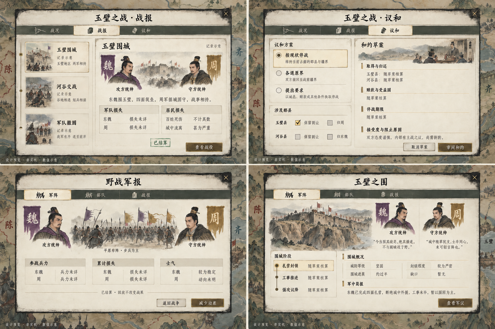
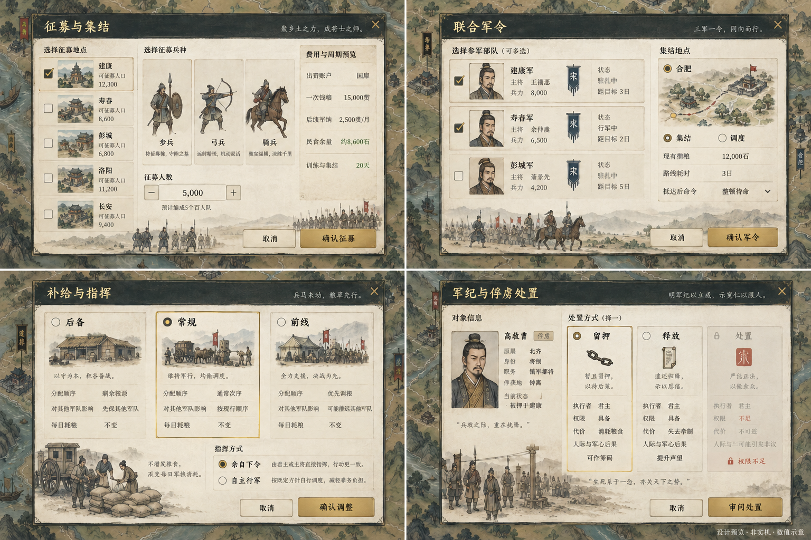
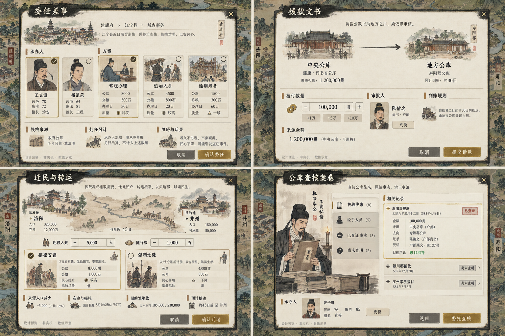
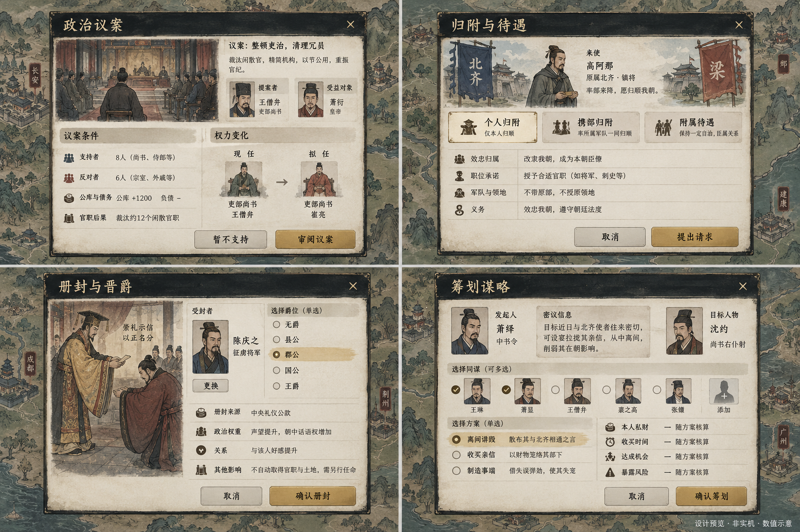
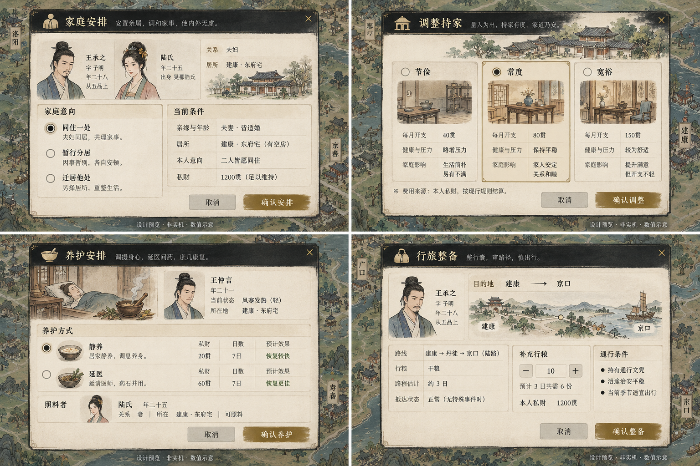
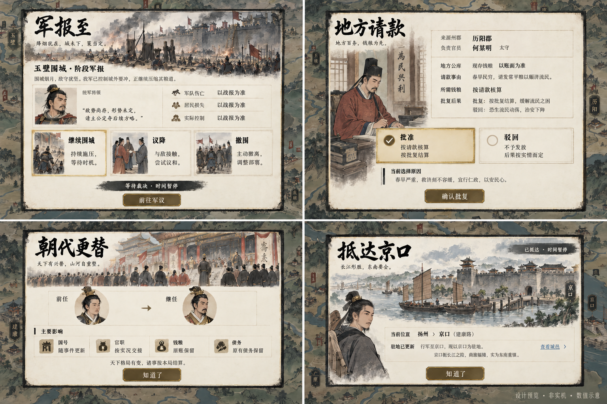
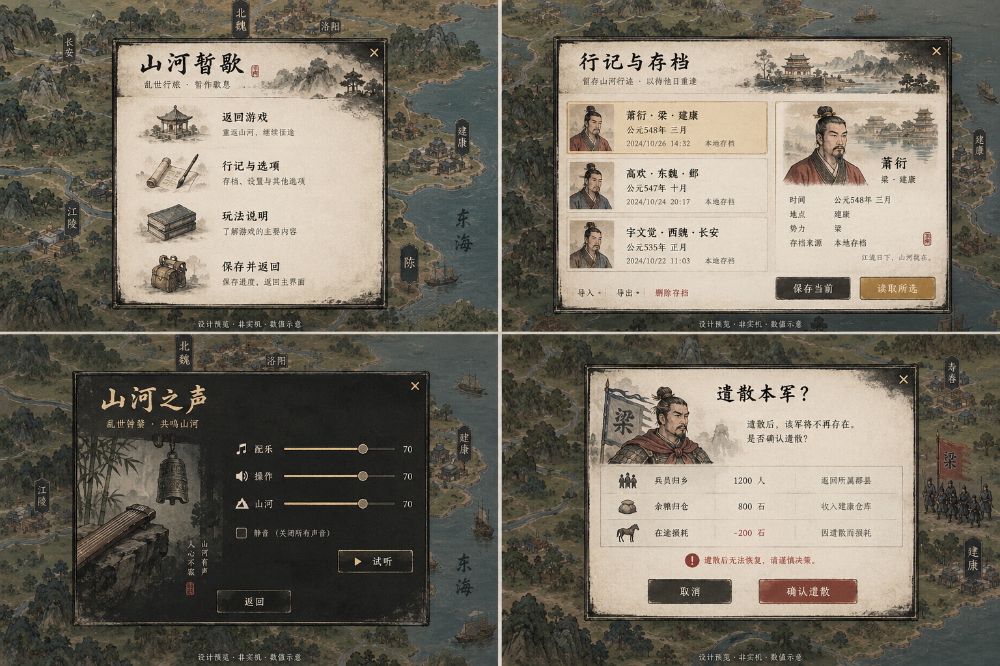
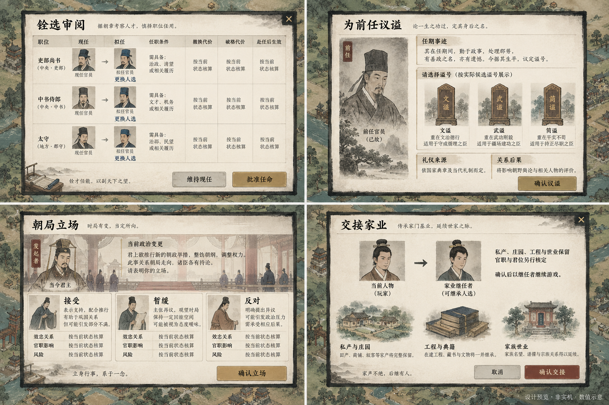
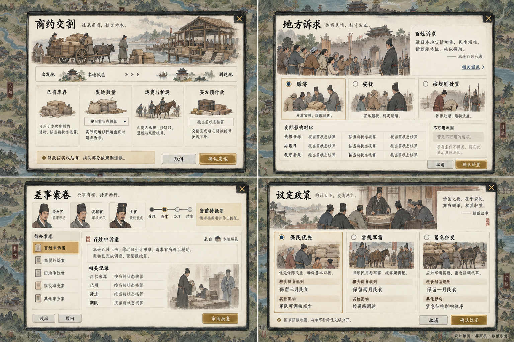

01 战争·战况
单一战争标题；横向页签；优势双向刻度；参战者、目标与占领集中展示。

02 战争·战报、议和、野战、围城
左上战报，右上议和，左下野战，右下围城。议和实施采用每县单个“保留割让”勾选；图内多余复选框不沿用。

03 军令·征募、联合调度、军需、处置
左上征募，右上联合军令，左下补给与指挥，右下军纪／俘虏处置。单军优先级不改变粮食库存或每日耗粮。

04 政务·委任、拨款、迁运、查核
左上委任差事，右上拨款，左下迁运，右下查核案卷。出资账户、执行者、审批权限均以实际游戏规则为准。

05 交涉·政治议案、归附、爵位、谋略
左上政治议案，右上归附，左下册封，右下谋略。图中具体方案、人名与数值仅为美术示意，不扩充玩法。

06 私事·家事、养护、持家、行旅
左上家事，右上持家，左下养护，右下行旅。私财、公粮与行粮分开，图中文字不代表新的健康／家事规则。

07 事件·军报、奏事、朝代、通知
上排为必须裁决的事件，下排为已结算通知。军报选项只是相关决策入口的示意，前往军议不执行命令。

08 系统·菜单、存档、声音、确认
左上菜单，右上存档，左下声音，右下危险确认。存档保持现有手动／自动／备份槽；示例名单不新增槽位。

09 人事·铨选、议谥、站队、家业交接
左上铨选，右上议谥，左下政治站队，右下家业交接。官职、君位和私产继承分别沿用既有规则。

10 行动·商约、地方诉求、案卷、政策
左上商约，右上地方诉求，左下差事案卷，右下政策。实际选项与成本来自当前规则；图中通用措辞不是新增命令。
